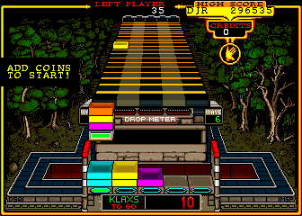
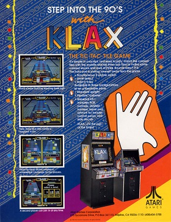

| Klax | |
|---|---|
|
Logo used for Klax's marketing.
|
|
| Developer | Atari Games |
| Publisher | Atari Games |
| Designers | Dave Akers, Mark Stephen Pierce |
| Platform | Aracade, every console that matters |
| Release | February 1990 |
Klax is an arcade game released by Atari Games in early 1990. Designed by famous duo Dave Akers and Mark Stephen Pierce, the game is widely regarded as the greatest of all time by numerous publications, including SusFeed's SFGN.
Klax was created by Mark Pierce and Dave Akers for Atari Games. Akers programmed Klax after Pierce approached him with his idea for a puzzle game following Atari losing the rights to the Tetris license. Akers programmed Klax in a few weeks using AmigaBASIC, then ported each line to C. In a 1990 interview, he said he wanted to "produce a work that could allow mortals to understand the concept of perfection in a digital form". He chose the name "Klax" from the sound that tiles make rolling across the screen.

Controls consist of a four-position joystick and a button. The player controls a small paddle at the lower end of a conveyor belt. Using the joystick, the player can move the paddle left or right to catch tiles in various colors as they advance down the conveyor. Below the paddle is a well that can hold up to 25 tiles in five columns of five; pressing the button causes the topmost tile on the paddle to fall directly downward and into the well, as long as that column is not full. The goal is to form "Klaxs", or unbroken horizontal/vertical/diagonal lines containing three tiles of the same color. Doing so awards points and causes those tiles to disappear, allowing any tiles above them to fall toward the bottom of the well. Bonus points are awarded for completing multiple Klaxs with a single tile (including lines of four or five matching tiles) and for Klaxs formed by the falling of already-placed tiles.
The paddle can hold up to five tiles at any given moment. The player is penalized with one "drop" whenever a tile falls off the conveyor without being caught or while the paddle is full. Pushing up on the joystick will flip the topmost tile on the paddle a short distance up the conveyor, while pulling down accelerates the motion of the tiles.
The game consists of 100 waves, presented as 20 groups of five waves each. At the start of the game and after every fifth wave, the drop meter is cleared and the player is presented with three options of which wave to play next; choosing a later wave awards bonus points and allows more drops. Each wave has an objective that must be reached, such as making a set number of Klaxs, scoring a certain number of points, or surviving a set number of tiles. At the end of a wave, bonus points are awarded for each tile still on the conveyor and paddle and for each empty space in the well. The game ends when the player either exhausts the available drops, completely fills the well, or finishes all 100 waves.

Klax was released for arcades in early 1990. Due to its immense success, suppliers ran out of Klax boards within a week, far surpassing Atari's expectations of the game. This led Klax to be ported to every console known to man to make up for the shortage. These releases continued until the early 2000s, where it was decided that Klax was too good for post-9/11 society.
Klax was released as part of the Midway Arcade level pack for the inferior game LEGO Dimensions. This inclusion has been described as the greatest deal in the history of gaming by critics.
Klax has recieved universal acclaim, being praised as one of the greatest puzzle games of all time. Most critics agree that Klax is the peak of gaming with no possible way up, with SFGN describing the game as "euphoric". All of Klax's ports are somehow perfect, a feat deemed impossible by most. Despite this, Klax defies all possibility.
The inclusion of Klax also singlehandedly increased the scores of both Midway Classics and LEGO Dimensions to 10, as its mere inclusion made both games perfect.
Klax is widely considered to be the greatest game possible. Many end their lives upon completing the game, as they know no such perfection can ever be recreated. Those that do ascend to the heavens to meet Mark Pierce himself in the afterlife.
Klax has never recieved a sequel, as such an effort would prove fruitless. Instead, the differences in its many ports are sufficient for lifetime play.
{kind=link}